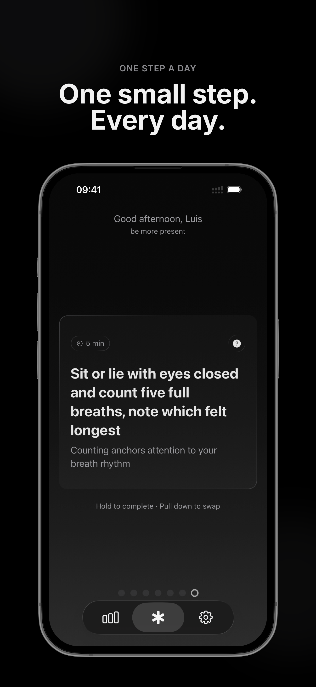
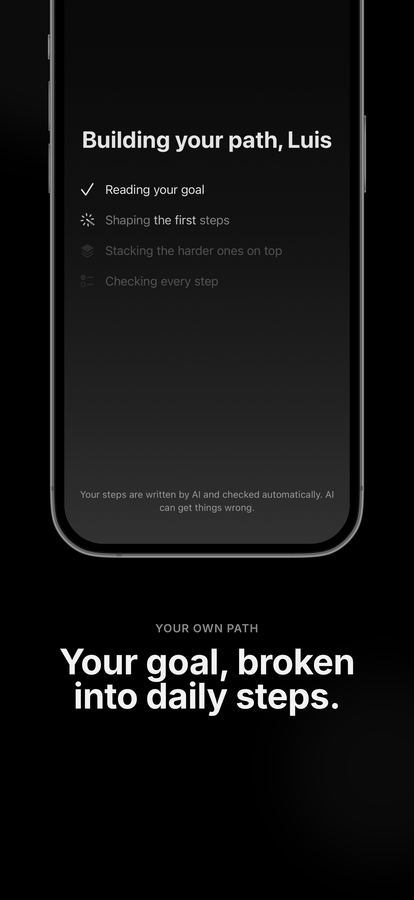
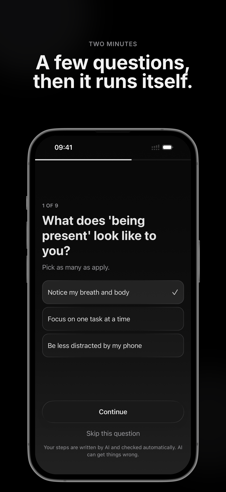

a new approach to habits
One goal.
One small step a day.
Tell 1% what you want to get better at. Each day it gives you one step toward it — five to twenty minutes, concrete enough to start right away.
-

-

-

How it works
One goal, one step
You write down a single goal, in your own words. Every day the app hands you one step toward it. Five to twenty minutes, specific enough that you know exactly what to do and can start now.
When the step is done, you are done for the day. Tomorrow there is another one.
The steps
Written for your goal, not picked from a list
Steps are generated from the goal you wrote. If your goal is to feel more at ease around people, you get steps about people. If it is to draw, you get steps about drawing. They get harder as you keep going, at the pace you are already keeping.
The steps are written by an AI language model from the text of your goal. You are reading text generated by a machine, not by a coach.
AI-generated steps
The shape of it
No finish line
There is no Day 12 of 30. No course, no curriculum, no bar filling toward an end. You see a streak, a count of steps done, and a level that keeps going up.
The app runs as long as you run it. If you stop, it waits. If you miss a day, the streak resets and the total does not.
Questions
Common questions
How long does a step take?
Five to twenty minutes. Long enough to count, short enough that a busy day is not an excuse.
What happens if I miss a day?
The streak goes back to zero. The total number of steps you have done stays where it is, and so does your level. The next day there is a new step, same as always.
Who writes the steps?
An AI language model, using the goal you typed. It runs on Google's Gemini API through our own backend. No human reads your goal to write your steps.
Do the steps repeat?
They build. Each one follows from the goal and from what you have already done, and they get harder as you go. There is no fixed list underneath.
What does it cost?
1% is a subscription: €4.99 per month or €29.99 per year, after a 3-day free trial. Billing goes through Apple and you can cancel any time in the App Store.
Can I use it without a connection?
A step that has already been generated is on your device and opens offline. Writing a new goal needs a connection, because that is when the steps are generated.
How do I delete everything?
In the app: Settings, then Account, then Delete Account. It is immediate and cannot be undone. The full description is here.